- 주제: 화재 이미지를 실시간으로 탐지해 화면에 FIRE 라벨을 표시하는 스마트 팩토리 사례
- 데이터셋: Roboflow 공개 데이터셋 fire detection, COCO JSON 포맷
- 정확도: 기준 화재 이미지 100장 테스트에서 98% 정확도
- 배포 경로: PyTorch → ONNX → TensorFlow Lite → Full-INT8 → Vela → NPU
| 대목차 | HTML 반영 내용 |
|---|---|
| 사례 소개 | 프로젝트 요약과 실제 적용 예시 |
| 자료집 수집 | Roboflow 소개와 다운로드 절차 |
| PC 학습 | Anaconda 환경, 훈련 사양, YOLOX 설정, 변환 |
| 개발판 추론 | System Initialization, Capture, Inference, Post-Processing, Display |
| DEMO | 링크 반영 |
Roboflow 오픈소스 데이터셋으로 YOLOX Nano를 학습한 뒤, ONNX를 거쳐 TensorFlow Lite로 변환하고, Full-INT8 양자화 및 Vela 최적화를 적용해 M55M1의 NPU에서 모든 연산이 돌도록 구성했다고 설명합니다. 목표는 즉시 반응하는 고효율·저전력 화재 감지 시스템입니다.
그림에서 박스로 표시된 화염 영역을 시스템이 FIRE로 라벨링하며, 기준 화재 이미지 100장 테스트에서 98% 정확도를 달성했다고 명시합니다. 화면에는 화재 발견과 경보 발생 흐름이 함께 표현됩니다.
| 항목 | 내용 |
|---|---|
| 데이터셋 | Train 1210 / Valid 347 / Test 164 |
| 모델 | YOLOX-Nano |
| 학습 환경 | Anaconda + PyTorch |
| 배포 목표 | NPU 기반 실시간 화재 감지 |
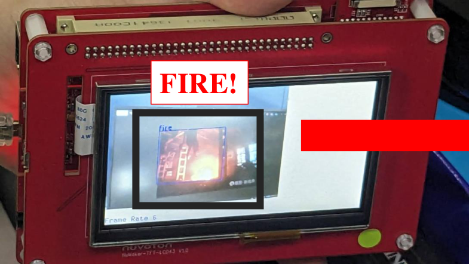
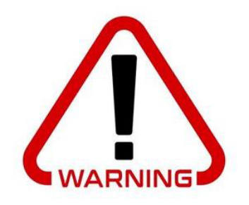
- 데이터 준비는 Roboflow를 사용합니다.
- 모델은 개발 보드 제약을 만족하는 경량형 YOLOX-Nano를 선택합니다.
- 모델 프레임워크 변환은 ONNX를 중간 단계로 사용해 PyTorch에서 TensorFlow Lite로 이어집니다.
- 가상환경은 Anaconda입니다.
- 훈련 프레임워크는 PyTorch입니다.
- 훈련 모델은 YOLOX-Nano입니다.
- 데이터셋은 Roboflow의 fire detection입니다.
- 형식은 COCO JSON이며 Train 1210장, Valid 347장, Test 164장입니다.
모델 리소스로 github.com/MaxCYCHEN/yolox-ti-lite_tflite_int8 저장소를 명시합니다.
Roboflow는 이미지 데이터 관리 플랫폼으로, 데이터 라벨링, 정리, 변환, 관리 기능을 제공하며 공개 데이터셋을 탐색할 수 있는 Universe도 제공합니다. 이 플랫폼을 통해 요구에 맞는 화재 데이터셋을 손쉽게 찾을 수 있다고 설명합니다.
- Roboflow 사이트에서 Products를 연 뒤 Universe로 이동합니다.
- Explore Universe에서 공개 데이터셋 탐색 화면으로 진입합니다.
- 검색창에 fire를 입력해 화재 데이터셋을 찾습니다.
- 프로젝트를 선택한 뒤 Download Project를 누르고, 훈련 포맷으로 COCO JSON을 선택해 내려받습니다.
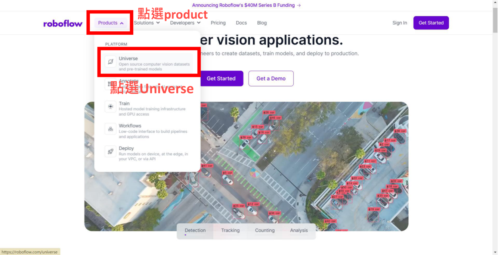
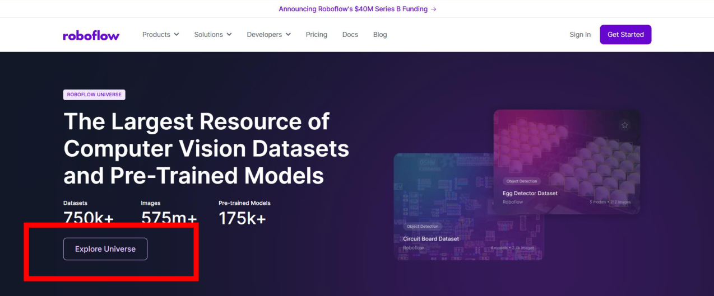
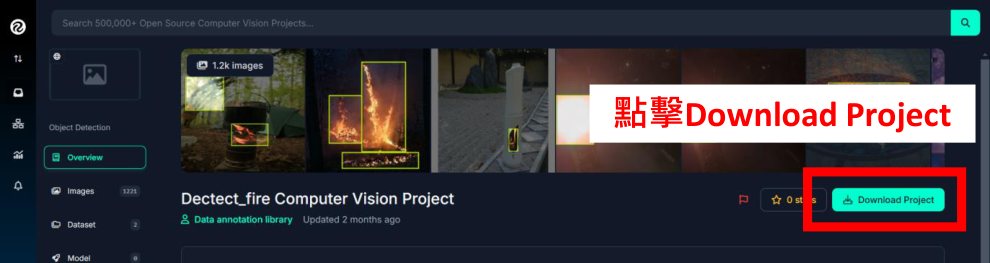
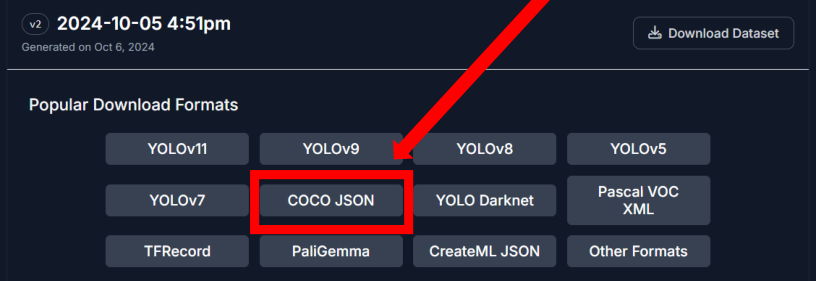
| 항목 | 값 |
|---|---|
| GPU | NVIDIA GeForce RTX4060 |
| CUDA | 11.8 |
| PyTorch | 2.0.0 |
| 훈련 데이터 | 1210장 |
| Epoch | 200 |
| Batch size | 64 |
| 훈련 시간 | 약 1시간 |
Python 가상환경 생성, pip 업그레이드, CUDA 11.8 + torch 2.0 조합 설치, MMCV 2.0.1 설치, requirements 설치, YOLOX 패키지 개발 모드 설치 순으로 환경을 구성합니다.
conda create --name yolox_nu python=3.10 conda activate yolox_nu python -m pip install --upgrade pip setuptools python -m pip install torch torchvision torchaudio --index-url https://download.pytorch.org/whl/cu118 python -m pip install mmcv==2.0.1 -f https://download.openmmlab.com/mmcv/dist/cu118/torch2.0/index.html python -m pip install --no-input -r requirements.txt python setup.py develop
모델 설정 파일은 exps/default/yolox_nano_ti_lite_nu.py입니다. 데이터셋은 Datasets/<your_datasets_name>/ 구조로 정리하고, 클래스 수와 epoch, 경로, 사전학습 모델 경로를 실제 프로젝트에 맞게 수정합니다.
Datasets/<your_datasets_name>/
annotations/
train_annotation_json_file
val_annotation_json_file
train2017/
train_img
val2017/
validation_img
python tools/train.py -f <MODEL_CONFIG_FILE> -d 1 -b <BATCH_SIZE> --fp16 -o -c <PRETRAIN_MODEL_PATH>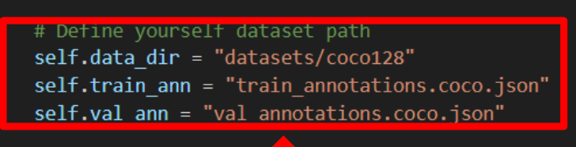
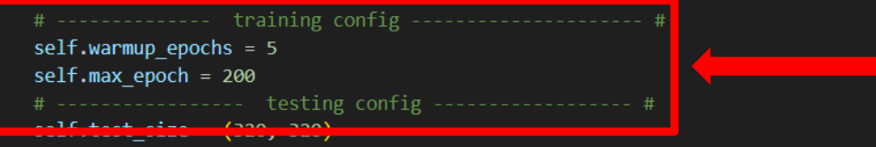
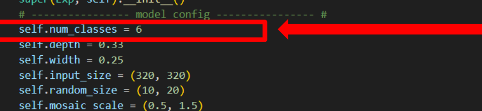
- PyTorch 모델을 ONNX로 export합니다.
- 캘리브레이션 데이터를 생성해 TFLite 양자화에 사용합니다.
- onnx2tf로 ONNX를 TensorFlow Lite로 변환합니다.
python tools/export_onnx.py -f <MODEL_CONFIG_FILE> -c <TRAINED_PYTORCH_MODEL> --output-name <ONNX_MODEL_PATH> python demo/TFLite/generate_calib_data.py --img-size <IMG_SIZE> --n-img <NUMBER_IMG_FOR_CALI> -o <CALI_DATA_NPY_FILE> --img-dir <PATH_OF_TRAIN_IMAGE_DIR> onnx2tf -i <ONNX_MODEL_PATH> -oiqt -qcind images <CALI_DATA_NPY_FILE> "[[[[0,0,0]]]]" "[[[[1,1,1]]]]"
양자화 모델은 vela\generated\에 두고, variables.bat의 MODEL_SRC_FILE, MODEL_OPTIMISE_FILE을 수정한 뒤 gen_model_cpp를 실행합니다. 결과는 .tflite.cc 파일로 생성되어 보드 프로젝트에 포함됩니다.
set MODEL_SRC_FILE=<your tflite model> set MODEL_OPTIMISE_FILE=<output vela model> # output vela/generated/yolox_nano_ti_lite_nu_full_integer_quant_vela.tflite.cc
- System Initialization
- Capture Image
- Inference
- Post-Processing & Draw Results
- Display Results
BoardInit() 함수는 하드웨어 초기화를 담당하며, 전체 시스템이 안정적인 클록과 통신 환경 위에서 실행되도록 준비합니다. 이 단계가 영상 처리와 신경망 추론 모두의 기반이라고 설명합니다.
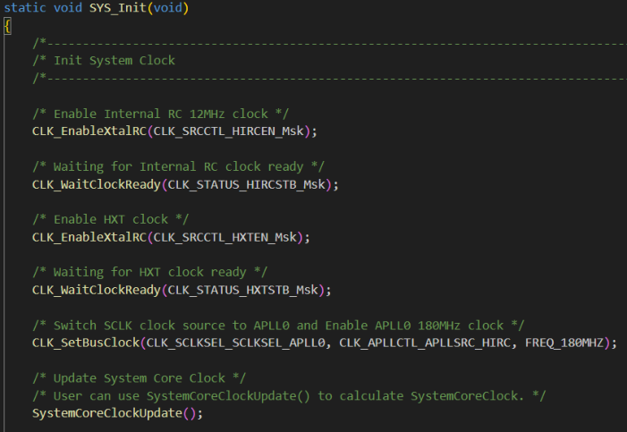
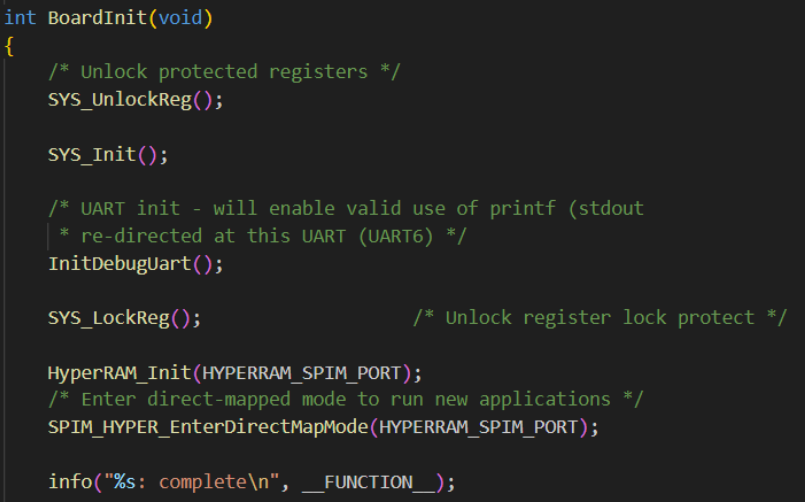
- get_empty_framebuf()는 새 영상을 담을 빈 버퍼를 확보합니다.
- 기존 데이터를 덮어쓰지 않도록 사용 가능한 자원을 먼저 확인합니다.
- 그 다음 실제 캡처를 수행해 해당 버퍼를 영상 데이터로 채웁니다.
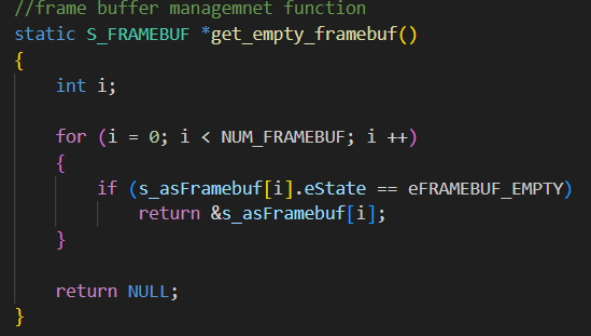
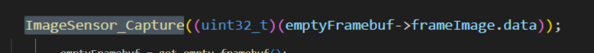
- get_full_framebuf()는 채워진 버퍼를 가져와 추론에 사용합니다.
- 모델 추론 함수 선언과 호출 흐름이 별도 슬라이드로 설명됩니다.
- PresentInferenceResult는 검출된 객체의 클래스와 위치를 중간 결과로 정리합니다.
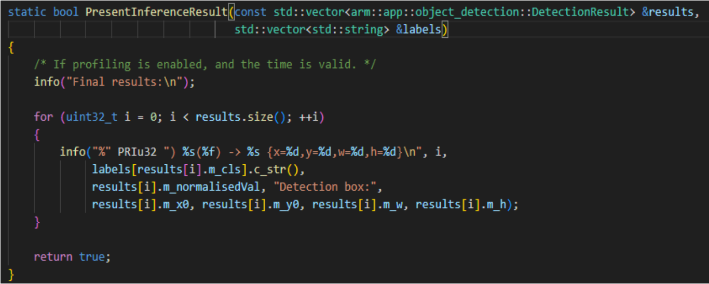
- 추론 네트워크 출력 좌표를 원본 이미지 크기로 다시 스케일링합니다.
- 출력 텐서에서 바운딩 박스와 클래스 확률을 추출합니다.
- NMS를 적용해 중복 박스를 제거합니다.
- 최종 결과는 resultsOut 벡터에 저장합니다.
- DrawImageDetectionBoxes()가 검출 박스와 FIRE 라벨을 시각화합니다.
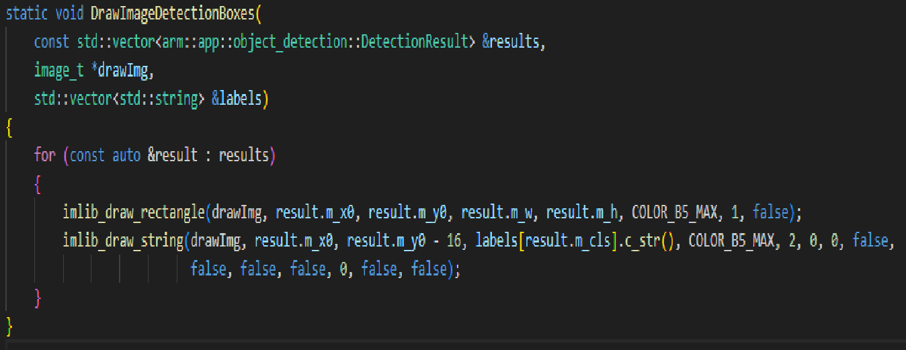
DEMO 링크를 제공합니다. 이 사례는 공장 또는 설비 현장에서 초기 불꽃을 빠르게 감지해 즉시 경고하는 용도로 설계되었습니다.